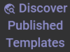
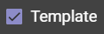

TOUCHSCREEN NOTE: Some interactive features may not currently be available for touchscreen devices. Please consider using a mouse and keyboard if available.
| List Types | The list type selector is near the upper right portion of your screen. There are three types of lists: active, templates, and archives. |
|---|---|
| List Filter | Reduce the number of displayed missions in your list by clicking the filter icon found at the left of your screen. |
| Team Selection | The team selector icon is at the top center of your screen. Click it to select a team or create a new one. All accounts have manager access to a Scratchpad team. You are the only member of that team unless you invite others. |
| Team Membership | Click the team membership icon at the left of your screen to see who is in a team and add/remove members if you have manager rights in that team. |
| Your Profile | Click on your username displayed on the upper right of the screen to view your account settings. |
| Existing Missions | Click on existing missions to view their details. If you have edit rights to that mission, you can then update its content there. |
Create new missions from existing templates to get a head start on your planning.
| Discover Published Templates |
Click this icon to find templates created by others for you to get a head start on your new mission.  |
|---|---|
| Convert into an Active Mission | Click the clone icon to convert a template into a mission you can modify and begin using. |
| Create Templates |
Convert any mission into a reusable template by clicking the template checkbox on the clone dialog.  |
Move your missions into the archive section once they are no longer active.
| Moving to Archive | Click the archive icon on the mission panel. |
|---|---|
| Restoring from Archive | Click the restore option after clicking the actions icon of the archived entry. |
| Hover | Use your mouse to hover over screen elements if you are not sure what they do. If they are a clickable icon, you will find hover text telling you what happens when you click it. |
|---|---|
| Scratchpad Team | Keep that team just for yourself. If you want to share missions with others, create a team just for that purpose and invite them to it. |
| Access Scope |
When a misson or template is marked as "team" access scope, only members of the team can view or edit it. When you mark a mission or template as "public" access scope, anyone with the URL to that mission or team will then be able to see it. Only users you invite to the team with edit rights will be able to edit it. Click the properties icon |
| Mission Type |
Missions of type "individual" are intended for just one person. This might be an individual mission plan or educational insight into how to complete a mission. Missions of type "group" can have "owners" assigned to the workitems of that mission. The available owners will be members of the team. Click the properties icon |
| Deleting Content |
Click the destroy icon of a mission panel to delete it from the system. Be careful because once content is destroyed, it is not recoverable. |
| Jump to Main Screen | You can click the Grokflow logo in the upper left of the screen at any time to return back to the main page of the application. |
 of a mission panel to see the
access scope setting.
of a mission panel to see the
access scope setting.